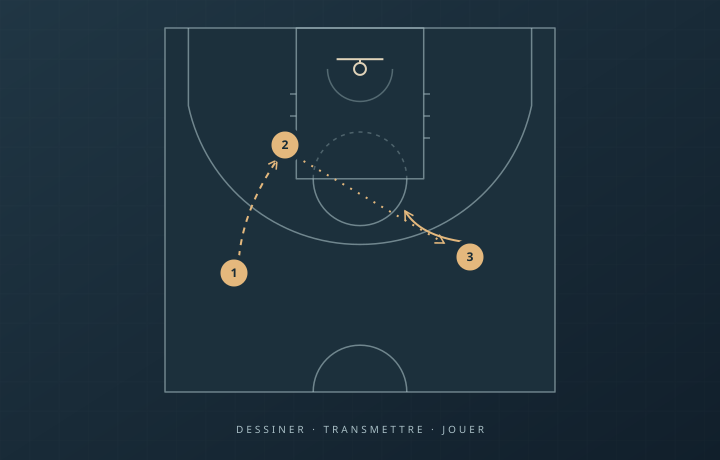

Calque
Transformez vos PDF et scans en documents Word, simplement et en toute confidentialité. Retrouvez un texte modifiable et vérifiez le résultat page par page.
MATHIEU ORFILA
Je construis des outils et des expériences autour de ce qui m’anime. Voici mes projets, là où ils en sont.
Explorer les projetsTransformez vos PDF et scans en documents Word, simplement et en toute confidentialité. Retrouvez un texte modifiable et vérifiez le résultat page par page.

Aider à concevoir et transmettre des systèmes de basket : dessiner les déplacements, organiser une bibliothèque et présenter le jeu en animation. Un outil personnel pour préparer ses séances et partager ses intentions avec l’équipe.

Construire une aventure d’action fantastique en 3D, accessible dans le navigateur sur ordinateur et téléphone. Le prototype mêle exploration, combats et énigmes dans une expédition guidée, au sein d’un univers encore en construction.

Un petit monde animé pour comprendre les processus de travail avec l’IA : répartition des rôles, échanges, tâches en parallèle et validations humaines. Explorez des scénarios pas à pas pour voir comment ces éléments s’articulent dans un projet.
EN DEHORS DES PROJETS
Le basket, la F1, la musique et les univers de science-fiction font partie de mes centres d’intérêt. Des choses à écouter, à suivre, à explorer — et qui nourrissent ma curiosité.
Et une idée qui me suit : progresser par petites touches, avec curiosité.
Retrouver mes projets sur GitHub